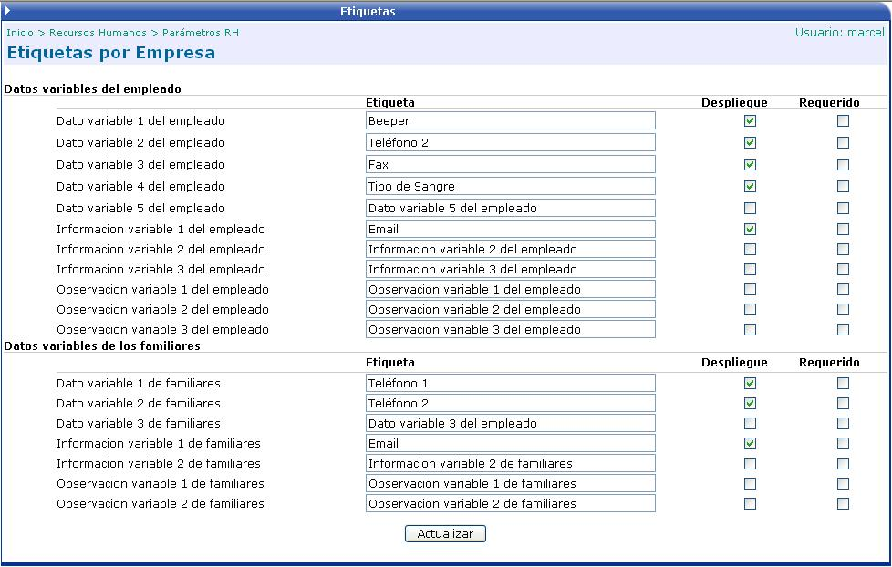
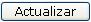

Para algunas empresas es necesario tener cierta información adicional del empleado o de sus familiares y para otras empresas no.
Debido a esto es que se presenta esta opción, donde el usuario crea las etiquetas de la información que piensa que son necesarias de tener en el expediente del empleado.
El check Despliegue sirve para mostrar esa etiqueta en el expediente del empleado.
El check Requerido convierte a la etiqueta en un campo obligatorio de llenar con información, o sea es un campo que no se puede dejar en blanco.

Una vez creadas las etiquetas, los cambios se guardarán al dar un click en el botón

y cuando se ingrese al expediente del empleado ya estarán creadas dichas etiquetas.